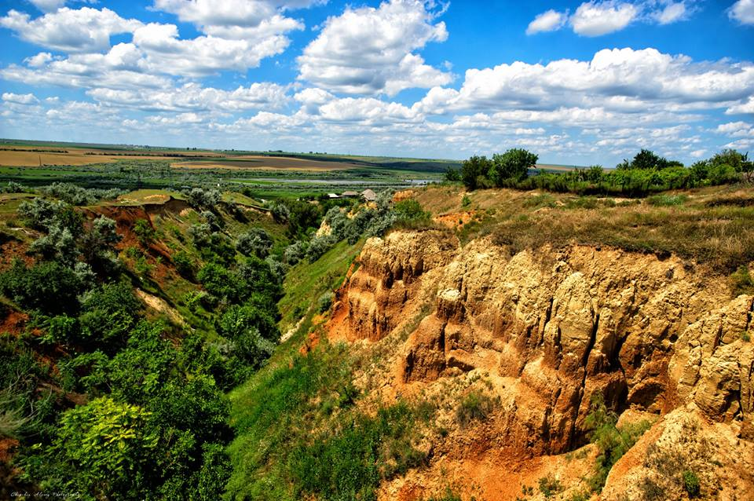

Canionul din Cişmichioi (Râpa Cișmichioi)
Canionul din Cişmichioi este unul dintre cele mai frumoase locuri din Găgăuzia. Situat in centrul satului, este monument al naturii. Atracția este obiectul de studiu al paleontologilor din diferite părți ale lumii. În 1982, în timpul săpăturilor efectuate de oamenii de știință din URSS, pe teritoriul râpei a fost descoperit un os de mamut.